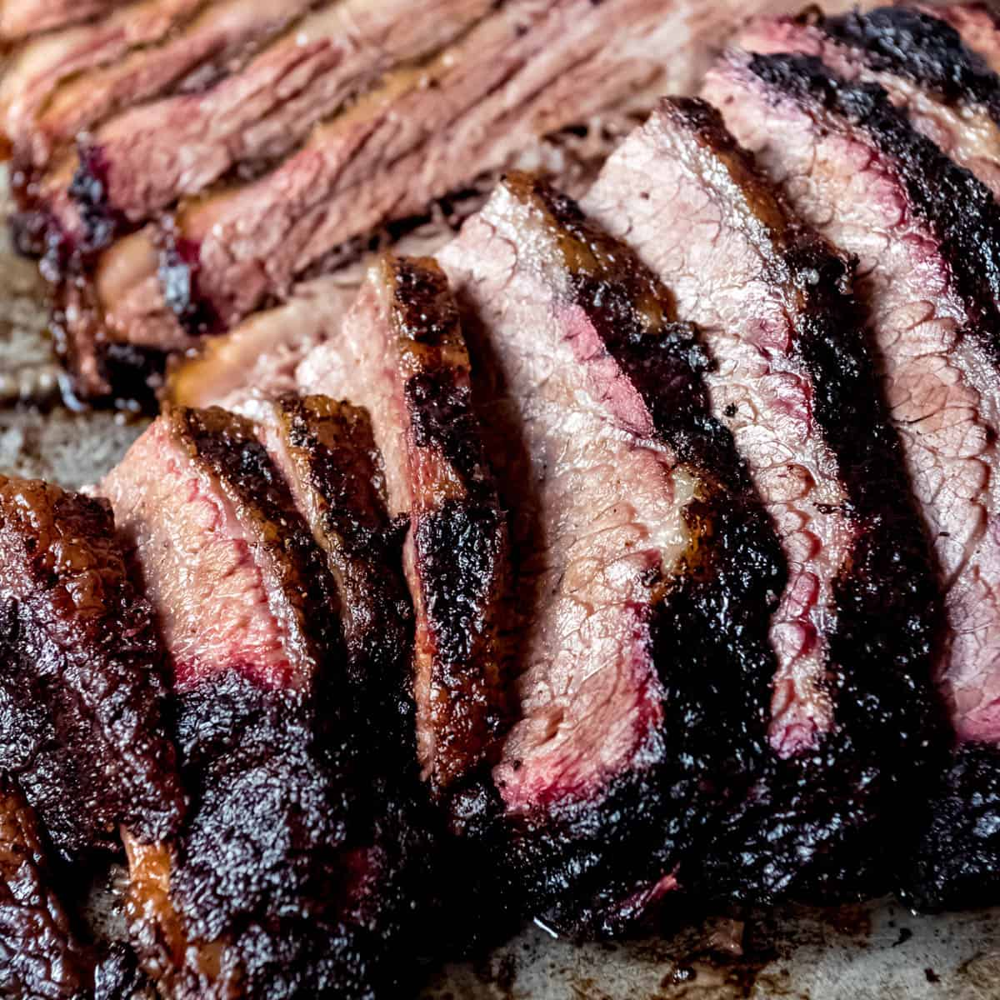

Yeah, I-Lived-in-Texas, Smoked Brisket

This is hands-down the best way I have found to cook a brisket.
Ingredients
- wood chips
- ¼ cup paprika
- ¼ cup white sugar
- ¼ cup ground cumin
- ¼ cup cayenne pepper
- ¼ cup brown sugar
- ¼ cup chili powder
- ¼ cup garlic powder
- ¼ cup onion powder
- ¼ cup kosher salt
- ¼ cup freshly cracked black pepper
- 10 pounds beef brisket, or more to taste
Cooking steps
- Soak wood chips in a bowl of water, 8 hours to overnight.
- Mix paprika, white sugar, cumin, cayenne pepper, brown sugar, chili powder, garlic powder,
onion powder, salt, and black pepper together in a bowl. Rub the spice
mixture over the entire brisket; refrigerate for 24 hours.
- Preheat smoker to between 220 degrees F (104 degrees C) and 230 degrees F (110 degrees C).
Drain wood chips and place in the smoker.
- Smoke brisket in the preheated smoker until it has an internal temperature of 165 degrees F
(74 degrees C), about 12 1/2 hours. Wrap brisket tightly in
butcher paper or heavy-duty aluminum foil and return to smoker.
- Continue smoking brisket until an internal temperature of 185 degrees F (85 degrees C)
is reached, about 1 hour more.
Note
I use a mix of mesquite, pecan, hickory, and oak wood chips, but lean more toward mesquite
and pecan wood chips.
Smoke brisket for 1 hour 15 minutes per pound of brisket.